本章以 2026-09-15 模型发布后三周内（截至2026-10-05）的公开落地实践为样本，系统考察 Jev 式决策模型在真实生产链路中的接入形态、有效边界与成本收益。全章核心围绕两条主线展开：一是当前主流的两种生产模式 —— 置信度级联与影子评估 —— 的成立前提、实证基准与失效条件；二是基于“校准需求 — 成本约束 — 数据主权”三维度的部署选型决策框架。
8.1、已公开使用场景全景
截止1005关于Jev的公开可考落地横跨了反诈筛查、渗透测试 harness、移动 GUI agent、视觉决策、代码路由、agent 记忆、量化交易、医疗与交易决策等九类场景。大致信息如下：
| 领域 | 系统 / 仓库 | 关键数字 | 来源 |
|---|---|---|---|
| 流式反诈筛查 | JevLite on CallScreenBench | AUROC 97.4% [93.3,99.7]、ECE 5.2%、p50 64.5 ms（p95 110.5）；41 个新场景/577 个 turn-end 决策；预注册 .02 非劣（ΔAUROC +.027 [−.011,.065]，下界越过 −.02 margin 0.009，非劣但不优） | arXiv:2609.23959 |
| 渗透测试 harness | NeuroSploit + Jev/Laya | 单目标 exploratory：墙钟 32m12s→26m53s（−16.5%，单轮无统计功效）；Jev API p50 236–276 ms、Laya(T4) p50 33–40 ms、batched 10 时 7.2 ms/q；15 个 Noul 一批约 $0.0001 | arXiv:2609.28940 |
| 移动 GUI agent | Jev-Mobile on AndroidWorld | 成功率 0.79（Step-wise VLM 0.84、SeeAct-V 0.78）；成功轨迹均时 132.67 s（−32.7% vs Step-wise）；executor 时间 5.16 s（−94.5%）；模型 API 成本 $0.073/成功（−73.4%） | arXiv:2609.30186 |
| 视觉决策 | PixelJev（Qwen3.5-VL） | Pets 冻结→LoRA +32.3pp；温度缩放后 ECE 0.0143 | arXiv:2609.29283 |
| 代码路由 | jev-codex-router（仓库已归档） | 一次 Jev ask 联合选模型档+思考深度+租约 | 项目：0xNatoshi/jev-codex-router |
| agent 记忆 / 分诊 | hermes-jev-skills | sshadow 模式先记录后切换；模型路由 ~0.4 s/轮、377 技能选择 ~2.8 s、分诊 ~0.4 s/条 $0.00006；web 注入筛查自报 70/79 拦截 | 项目：kerpopule/hermes-jev-skills |
| 量化交易闸门 | QuantDinger | Jev 在确定性硬检查之后、真实下单之前出 6 维 typed Choice（证据质量/信号一致性/regime/账户风险/执行质量/入场 pass-reject）；出场/止损/紧急动作全部绕过 AI；未公开任何闸门准确率指标； | 项目：OpenByteInc/QuantDinger |
| 医疗多模态 | OmniMed-Jev | HF 权重 xmutly/OmniMed-Jev-4B（MedGemma-1.5-4B backbone），8 模态 15 数据集 4 任务族，报告 reliability error 降 9.1×/44×/126×；对应论文 arXiv:2610.00381 | 项目：lytang63/OmniMed-Jev |
| 交易决策权重 | metask-jev | 自报 13 子集宏平均 79.6%、JevBench 公开 231 题 80.1%（@4096）、~24 ms/决策（RTX 4090）；蒸馏配方 withheld；2 stars（2026-10-05 实测），SOTA 主张未独立复核 | 项目：metask-ai/metask-jev |
三条结构性观察：
- 加法原则是反复出现的安全姿态 ——System One 层只能降置信度、标人工、剪枝 agent，不能覆盖确定性 validator 的拒绝，最坏情况等价于该层不存在：
渗透测试 harness 明文规定 System One 层只能降置信度、标记人工、剪枝 agent，但不能覆盖确定性 validator 的拒绝结果；
量化交易系统将出场、止损等核心路径完全绕过 AI 闸门，AI 宕机时 fail-open 照常下单并留痕；
两者的出发点一致：决策模型是增强项而非替换项，最坏情况等价于未接入该层，都不让决策模型成为不可回退的单点；
- 场景高度集中于初筛 / 路由 / 闸门等环节，而非终判 ——九个场景无一把最终决定权单独交给决策模型，均设升级阈值、人工复核或确定性收敛器；
反诈挂升级阈值与人工复核、渗透挂人工终审、交易挂确定性收敛器、代码路由挂 kill switch；
这一分布与模型的能力边界高度匹配：Jev 式模型在“从已有信息做分类、排序、筛选”类任务上表现稳定，但在“需推导、需原创、需因果判断”类任务上能力不足，因此自然被限定在决策链路的前端环节。
- 样本与统计功效普遍偏薄；
- 九类场景中，仅反诈筛查执行了预注册非劣检验、三种子集、场景级 bootstrap 的严格评估流程，符合统计纪律要求；其余多为单目标探索性测试、历史回溯仿真或小样本验证，普遍存在赢家诅咒与过拟合风险。
这也是本章将“模式成立前提”置于“性能数字”之前的核心原因 —— 脱离前提的数字不具备迁移价值。
8.2、生产模式一：置信度级联
置信度级联是当前证据最充分、落地最广泛的生产形态，其核心思想是“分层处理、按需升级”：用低成本的决策模型处理大部分简单样本，仅将低置信的复杂样本升级给高成本的前沿大模型或人工，在质量可控的前提下实现整体降本提效。
8.2.1、成立前提
置信度级联不是通用方案，它的成立依赖三个刚性前提，缺一则会退化为“纯省钱丢质量”或“纯加延迟不省钱”，三个前提均与校准特性、模型能力边界直接相关：
- 第一级置信度单调追踪错误，即高置信样本上第一级与第二级准确率相当，错误集中分布在低置信区间；
这一前提的本质是模型具备良好的置信度校准能力（对应 ECE 与 Brier 得分指标）—— 置信度得分能够真实反映输出正确的概率；
JEV-as-a-Judge 实测显示，双序一致的高置信接受项上，JEV 与 GPT-6 准确率基本持平（94.7% vs 94.4%，3744 题），错误主要集中在低置信区间，置信度的错误检测 AUROC 跨任务分布在 0.73–0.88 区间，这为级联提供了基础可行性；
- 两级错误互补，即即第二级模型能纠正第一级的错误，而非重复第一级的偏差；
这是级联模式最容易被忽略的核心前提 —— 级联的质量收益本质来自两级模型的错误不重叠；
该前提并非天然成立，在评分标准模糊、存在共性认知偏差的场景中，两级模型的错误会高度相关，导致级联完全失效；
- 阈值可在少量本地标注上冻结迁移；
由于官方校准参数仅在训练分布上有效，跨域后会出现校准漂移（对应跨域校准失效结论），因此必须在目标业务的少量本地样本上重新拟合阈值。
JEV-as-a-Judge 的实践显示，仅需约 100 条本地标注，通过下置信界（lower confidence bound）策略选择阈值，即可将“严重失分（>2 分）”的概率从～45% 压缩至～5%；
如下为流程示意图：
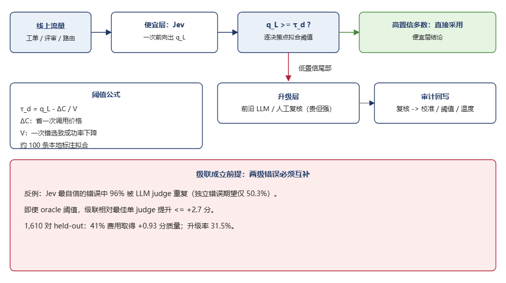
8.2.2、基准数字：JEV-as-a-Judge（2609.26550v3）与 2026-10 新证据四单元
2609.26550v3提出的JEV-as-a-Judge是目前公开项目与论文最典型的级联实证：
| 测量条件 | 规模 | 结果 | 升级率 | 费用比 |
|---|---|---|---|---|
| held-out 级联（τ=0.9） | 1,610 偏好对（1,340 RewardBench + 270 JudgeBench） | 级联 93.4% vs GPT-6 92.5%，+0.93 分 [0.24,1.66] | 31.5% | 0.414 |
| 前瞻性 live test | 570 对全新负载 | 级联与 GPT-6 完全打平（90.2% vs 90.2%） | 74.2% | 0.755 |
这里存在边界条件需要指出：
置信度的错误检测能力在“推理型”任务（专家知识−7.0、代码−12.9、数学−14.3、逻辑题−27.6）、风格对抗（劣质答案表述更华丽时，准确率从 85.4% 降至 76.6%）、无参考散文类任务（AUROC 0.498，接近随机）上基本失效；
能力差距的分布直接决定了级联的优化方向：JEV 与 GPT-6 的差距不是均匀的，而是集中在特定任务切片上——“结论可从文本读出”的任务差距≤3 分，“需要推导”的任务差距 7–28 分；
因此最优级联策略不是按统一阈值无差别升级，而是将“可从文本读出”的初筛留给 JEV，把“须推导 / 须专家知识”的切片整批升级！
目前看到的既有级联证据集中在评审、反诈、渗透、代码仿真四个单元，任务域偏智能体、安全与内容审核。而在2026 年 10 月新增了四个跨域独立复现单元，分别覆盖级联的四个互补环节，使级联模式的证据强度达到 A 级（多域独立复现）：
JevAgentHarness：按决策点拟合阈值（arXiv:2610.21412）
《JevAgentHarness: Benchmarking, Deploying and Training Decision Models That Share Control with LLMs》
该研究补充了级联模式的关键细节：统一阈值不适用于多决策点的长链路任务；不同决策点的错误代价、回退成本差异极大，必须基于“错误导致的任务损失”与“升级调用的成本”逐点计算最优阈值 \(τ_d=q_L−ΔC/V\)；
论文实测显示，逐点拟合阈值可在 DecisionGym 上实现 0 质量损失 + 14.2% 成本节省，而固定 0.5 阈值会导致 21.5 分的质量损失；在 Terminal-Bench 2.0 上实现成本下降 64%、耗时缩短 43%，质量仅下降 2.7 分；
结论：校准阈值是级联生效的必要条件，而非可有可无的调参；
边界：成本节省高度依赖两级模型的价差，价差缩小时收益大幅收窄；
详细扩展：
背景&出发点：
- 典型 Agent（mini‑SWE‑agent、Claude Code、客服 Agent 等）由Harness（调度器 / 执行脚手架）驱动：Agent 每一步状态转移，都调用一次昂贵的生成式大 LLM，由 LLM 输出文本 / 结构化工具调用。 作者观察到一个结构性事实：Agent 循环里大量调用，本质不是自由创作，而是有限选项的离散决策，比如：
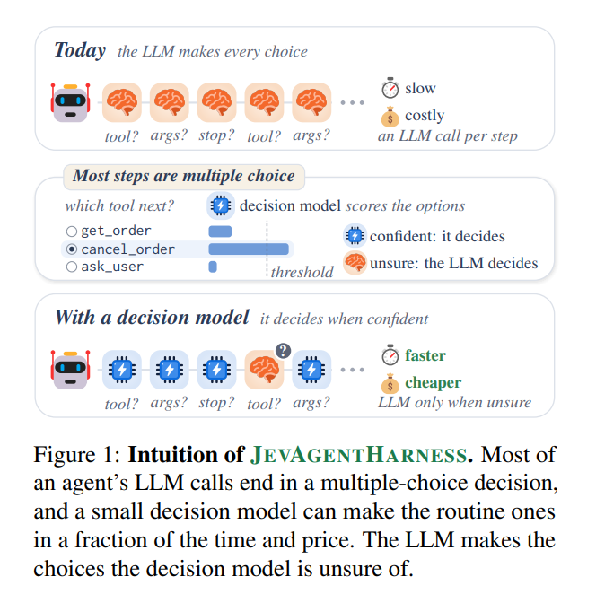
选哪一个工具；
工具参数从枚举候选里选哪一项；
是否停止任务、是否发起反思、是否校验、是否询问用户；
是否批准 / 否决大模型输出（Guard 模式）；
这类问题天然是多选分类问题，不需要大模型做自回归文本生成 —— 天然适合Jev决策模型；
现有方案存在三个核心未解决问题，也是本文的研究锚点：
评测鸿沟（Evaluation Gap）：离线单独测试决策模型的选择题准确率很高，一旦放到闭环 Agent 里，决策错误会改变环境状态，错误沿着轨迹链式放大；离线指标和真实任务成功率相关性弱。之前没有分层基准，区分 “孤立做题”、“静态打分”、“闭环控制”三种难度。
置信度门控的陷阱：简单固定置信阈值（比如 0.5）做级联，会带来巨大成功率跳水。原文数据：不加拟合阈值直接下放工具选择，任务成功率直接下降 19 个百分点。
训练数据分布缺陷：现有 Jev 等决策模型训练样本大多来自成功轨迹，很少覆盖 Agent 自己犯错之后进入的异常状态；而真实 Agent 运行中大部分高风险决策点恰恰出现在出错后的状态，模型对这类分布外状态校准差、置信度不可靠。
研究问题分解：能不能让 Agent 脚手架安全地把离散决策委派给低成本决策模型，把任务成功率的损失控制在很小范围内？
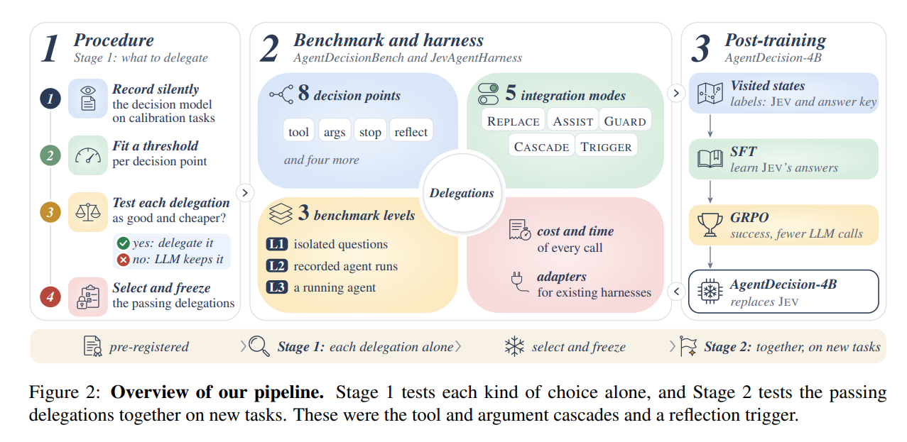
RQ1：如何分层评测决策模型在 Agent 闭环场景下的真实能力？
RQ2：如何设计自适应、感知代价与风险的置信门控策略，实现大小模型级联共享控制？
RQ3：如何训练一个开源决策模型，覆盖 Agent 失败后的坏状态，在闭环任务上优于闭源 Jev？
核心产出一：AgentDecisionBench 分层评测基准 + DecisionGym 仿真环境
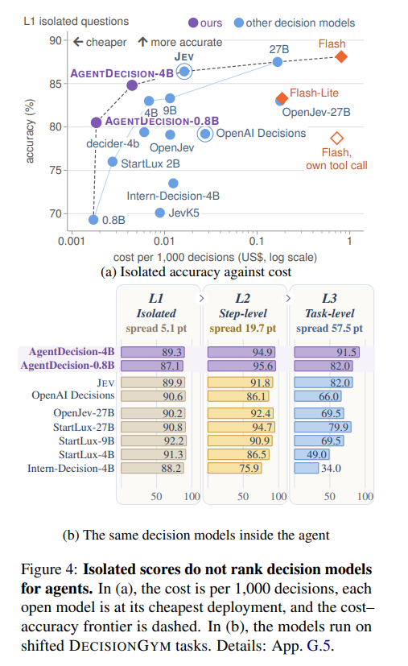
三层递进评测阶梯，用来诊断 “离线分数虚高” 问题，三层严格对应从易到难、从脱离环境到闭环控制；
L1 Isolated（孤立问题）：把决策抽成独立选择题，脱离 Agent 环境 —— 答案不会改变后续状态，传统评测方式,只能看静态选择题识别能力，预测性很差；
L2 Step-level（步骤级）：在已经录制好的固定轨迹上打分 —— 模型输出选项，但不执行，环境状态固定，错误不会传导,和真实闭环成功率相关性更高，是性价比高的中间验证
L3 Task-level（任务级）：决策模型真实接管 Agent，动作会被执行 —— 状态随模型选择变化，错误链式传播；最贴近上线,最终真实性能指标，也是作者重点推荐的评测方式
配套自研仿真环境 DecisionGym：面向客服类任务，环境内置每个状态下全部合法、正确的可选动作，因此可以自动给出每一步决策的 Ground Truth，不需要人工标注。
实证结论：在 L1 上准确率最高的模型，L3 闭环任务成功率仅 69.5%，直接证明离线榜单不可信；
核心产出二：JevAgentHarness 级联共享控制框架（主体工程）
JevAgentHarness 是一套可插拔适配器层，不需要大规模改写原有 Agent 代码；它在 Agent 循环的决策点上注入钩子，把结构化多选问题喂给决策模型，再根据置信策略决定 “采纳小模型结果” 还是 “回退给原生 LLM” —— 整体由三块组成：
类型化决策接口（Typed decision interface）：统一 Jev 风格输入规范
把一次工具调用拆成两层独立决策：工具名称选择 + 每个枚举型参数选择；自由文本参数仍然留给大 LLM 生成。
也就是说，框架天然区分【离散决策】和【开放式生成】，不强行让小模型生成文本。任何兼容该接口的决策模型都可以接入。
基于影子轨迹拟合的感知风险阈值器（核心数学组件）
阈值 τ 不是全局固定值，每个独立决策点单独拟合；
拟合数据来自影子模式（Shadow Mode）：决策模型后台并行预测，但不接管控制，由原始大模型继续执行，收集大量真实轨迹；
阈值优化目标同时权衡三项成本：
大模型一次调用的货币 / 延迟成本；
当前决策如果选错，造成整个任务失败的损失；
决策模型在该状态下的校准概率
高风险不可逆动作（取消订单、退款、高危操作）会自动得到接近 1.0 的阈值：只有极高置信才允许下放；普通查询动作阈值更低；
当底层 LLM、决策模型、业务规则变更后，阈值必须重新拟合；
适配器、服务层与记账模块：对接 mini‑SWE‑agent、Claude Code 等现有 Agent 脚手架；自动统计 LLM 调用削减比例、延迟、成功率、成本；
将AgentLoop循环当中8个决策插入点与有哪些模式对应，提出了五种控制模式：
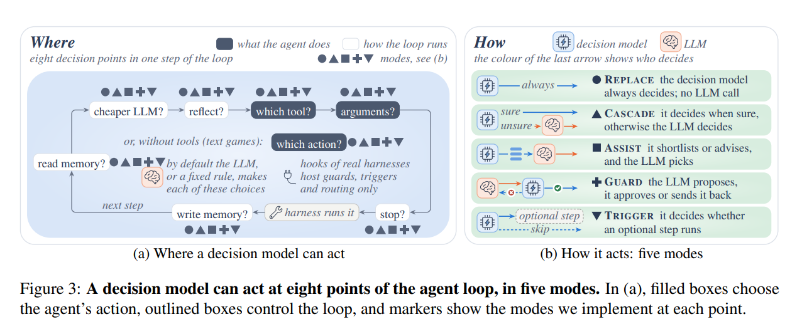
Cascade（级联，本文主推）：先问决策模型；置信≥τ → 直接采用；低于 τ → 交给大 LLM。代价收益最好，主实验默认模式。
Replace（全权替代）：所有决策永久交给决策模型，不回退 LLM；成本最低，但成功率暴跌，只适合极低风险场景。
Assist（候选压缩）：决策模型输出 Top‑k 候选选项，缩小搜索空间，再把精简后的选项交给 LLM 最终选择；不直接做决定。
Guard（审查 / 守卫）：LLM 先给出决策；决策模型做二分类：同意 / 否决；否决则重新生成。
Trigger（触发判定）：二元决策：要不要启动反思、要不要停止、要不要进入子流程。
核心产出三：AgentDecision‑4B，开源决策模型
基于 Qwen3‑4B 基座，用 LoRA 微调得到 AgentDecision‑4B，训练分为两个阶段：
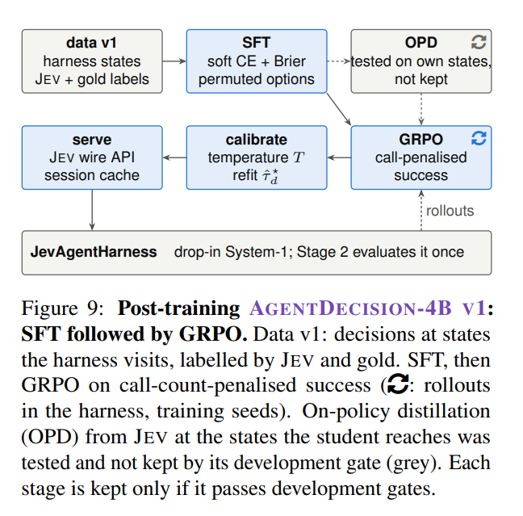
SFT 监督微调（主增益来源）
训练轨迹包含 30.9% 来自 Agent 失败 / 错误状态（这是和原版 Jev 最大的数据差异）；
标签采用 Jev 输出的软概率标签，不是硬 one‑hot；
损失 = 交叉熵损失 + Brier 分数损失，目标是让模型输出的概率置信度被校准（减少过度自信）。
GRPO 强化学习（增量很小，算力开销大） 在 DecisionGym 环境内在线交互优化；奖励信号包含：任务成功、减少 LLM 调用次数、对不可逆错误动作施加惩罚。 消融明确指出：绝大多数性能提升来自 SFT；GRPO 带来的收益微弱，性价比不高。
比较有意思的是：论文原本想拿 OPD 作为 SFT 之后、GRPO 之外的另一条后训练路线，用来把决策模型对齐到大 LLM（教师）的决策分布；经过小批量预跑之后，作者直接放弃，主实验只保留 SFT (+Brier) + 少量 GRPO，列出的原因如下：
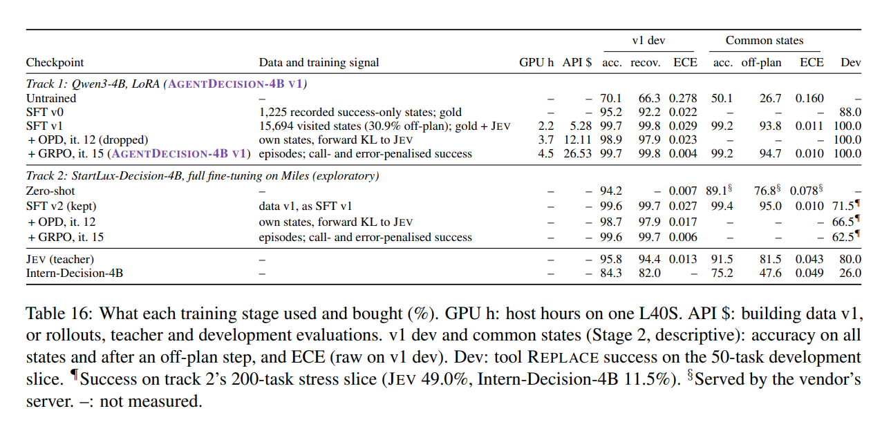
OPD 会破坏置信度校准 —— OPD 是 KL 对齐教师分布，目标是让学生的动作分布贴近教师；它不优化概率校准；
预实验观察：OPD 训练之后，模型变得过度自信，高置信错误（confident catastrophic mistake）变多；
而这个项目最怕的恰恰就是：高置信选不可逆坏动作（直接取消订单这类）；
SFT + Brier 目标是显式压 Brier 分数，天然鼓励校准，刚好匹配 JevAgentHarness 的级联阈值机制；OPD 会把前面校准收益毁掉。
学生自采样轨迹带来分布漂移 + 前缀污染（prefix conditioning bias）——
学生 policy 一开始弱，会大量进入坏状态、分布外状态；教师要基于这些 “被学生搞坏的前缀” 给出监督信号；
教师在学生生成的错误前缀上给出的分布本身就是有偏、不可靠的；
结果：OPD 会放大坏状态下的错误策略，而不是学会从坏状态恢复；
本文恰恰专门把 30.9% 的训练样本设置为 Agent 失败后的坏状态，目的是学会在坏状态里谨慎决策；OPD 的在线 rollout 机制反而和这个数据设计冲突。
想对比下： SFT 用固定收集好的影子轨迹（shadow rollout），状态分布可控，可以人为控制好状态 / 坏状态比例，不会一边训练一边自己制造分布偏移。
收益很低、算力开销巨大，性价比远不如 SFT，甚至不如 GRPO
在 DecisionGym 客服闭环任务上，OPD 带来的闭环成功率提升极小，很多时候甚至不如单纯 SFT+Brier；
OPD 需要训练循环里持续在线启动 Agent 环境、学生 rollout、调用昂贵教师 LLM 打分；Token / 算力成本远高于离线 SFT；
GRPO 已经是作者眼里 “收益微弱、算力贵” 的选项，OPD 比 GRPO 还要更贵、增益还更小；
【原文】绝大多数性能收益来自带 Brier 损失的 SFT；在线交互类方法（GRPO、OPD）边际回报很差。OPD 属于边际回报最差一档，直接砍掉。
决策空间是离散有限选项，OPD 的 dense token-level KL 目标不匹配任务形态
OPD 原生是为自回归 token 生成设计的（逐 token KL）； 而 Jev 决策模型的输出是有限离散选项的分类分布（工具 A / 工具 B / 询问用户 / 停止），不是长文本 token 序列：
把 OPD 套在离散决策上，目标函数形式别扭；KL 约束容易让分布坍缩、熵过低；
相比之下，交叉熵 + Brier 是原生适配分类概率校准的损失，简单、稳定、更容易调试。
和 GRPO 的对比：
GRPO 是基于任务结果稀疏奖励（成功 / 失败、惩罚不可逆动作），至少直接优化端到端任务指标；它虽然增益小，但方向和最终目标对齐；
OPD 目标只是 “模仿教师分布”，是一个代理目标，不直接奖励任务成功、不惩罚灾难性不可逆动作；
所以最终取舍：GRPO 保留做消融对照，但不放到主推荐流程；OPD 直接全部放弃，不进入主实验；
OPD 在线蒸馏会污染状态分布、破坏置信校准（而置信校准是这套级联调度的根基）、算力昂贵、闭环增益微弱；加上它原生是为 token 生成设计，和离散决策模型 + 阈值调度的整套体系不兼容，因此在预实验之后被放弃，最终训练管线锁定为 SFT（软标签 + Brier 校准损失）为主，可选少量 GRPO 为辅
Jev-LiteMAS：路由 + 评审分离（arXiv:2610.21411）
该案例拓展了级联的应用边界 —— 从单一判断点扩展至多智能体工作流的全局资源分配。
其核心判断是：多智能体系统中 31.7–43.5% 的生成式 token 消耗在“路由、评审、分诊”等选择类任务上，这类任务恰好匹配 Jev 式模型的能力范围，将其从生成式大模型中剥离出来，可在几乎不损失质量的前提下显著降低成本。
论文实测相对 LAS 框架能够节省生成式 token 12.7–54.6%，准确率差距≤1.34 点；决策层开销仅占端到端延迟的 2.92–6.85%、模型费用的 1.56–2.14%；
详细扩展：
核心：把多智能体流程里“选谁干活、半成品要不要放行”这类二选一 / 有限候选的决策，交给轻量决策模型 Jev；只在确实有问题的时候，才调用昂贵的生成式大模型做复核、写修改意见，大幅省 token、降延迟，同时任务准确率几乎不掉；
背景&出发点：
LLM 多智能体系统，包含两类工作：
专家生成工作：写代码、解数学题、产出方案（需要自由文本生成）
协调控制工作：选下一个该哪个智能体干活（路由）；判断中间输出是否合格（评审）
现在主流多智能体框架（MetaGPT、AgentNet、LAS 等）有一个很大的浪费：路由（下一步派哪个专家）、中间产物评审（这个结果能不能往下走）全都靠生成式 LLM 来做。论文实测：这两块控制逻辑，会吃掉整个流程 31.7%–43.5% 的 LLM token，延迟占比 29.5%–46.1%；
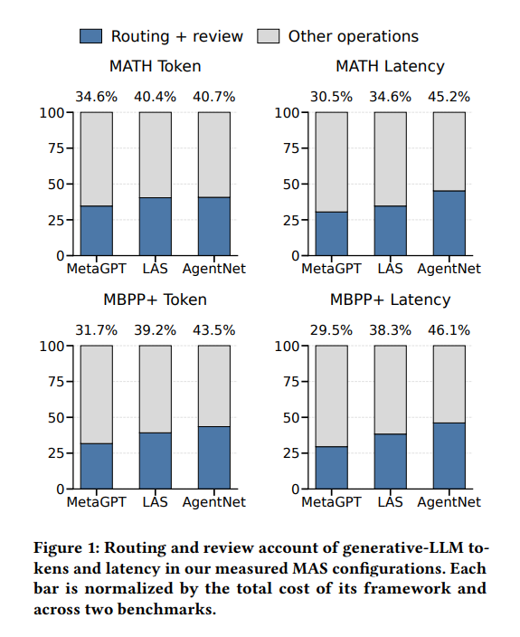
但直接替换会遇到两个接口Gap：
规划鸿沟 Planning gap：传统生成式规划器输出完整多步计划、交接指令；但 Jev 这类选择型决策模型只能从给定候选里面选动作，不会写自然语言计划 ——直接替换会丢失计划和交接指令。
评审鸿沟 Review gap：生成式评审不仅判断好坏，还输出可落地的修改建议；但 Jev 只能输出
pass/escalate二分类判决，无法生成修复用的反馈文本。核心研究：怎么用边界决策模型做协调，同时不丢失规划上下文、错误修复需要的生成反馈？
核心思路与设计：
核心思路：决策与生成分离（Capability Division） —— 把 “选下一个专家、判断半成品是否放行” 这类有限输出的决策任务交给轻量决策模型 Jev；只有遇到可疑产物才调用昂贵生成大模型做复核 + 写修改反馈；
Jev-LiteMAS 架构：一套可插拔、信息保留的工作流，把路由、初审交给选择式决策模型，只有可疑样本才走昂贵的生成复核 + 修复 —— 在 AutoGen 基础上搭的双层控制流，两个核心机制：
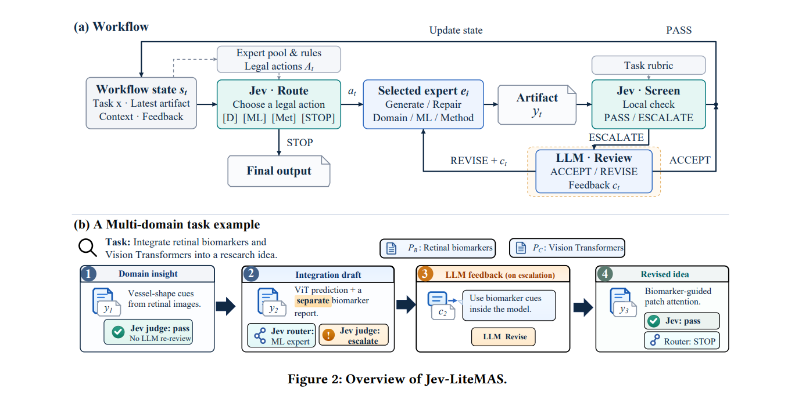
反馈驱动的专家交接（Routing）：不是提前写死路线；每一步看完上一个专家实际产出后，Jev 从合法候选专家里选下一个执行者，适配真实进展；
Jev 门控的分级复核（Gated Re-review）：
第一步：Jev 快速筛查：
pass直接放行，不碰 LLM；escalate（升级）才送给 LLM 评审；第二步：LLM 复核升级上来的产物：要么认可放行，要么给出可落地的修改反馈，交给对应专家返工；
返工后的产物，再次进入筛查流程。
JevCoder：代码修复委派边界（arXiv:2610.19596）
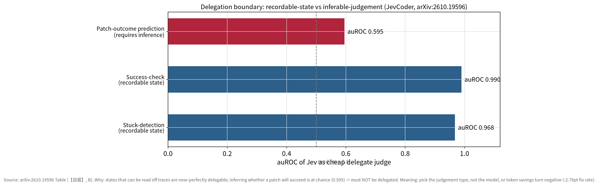
该研究清晰划定了决策模型的委派边界，与 后续章节的能力分界结论完全一致：可从历史轨迹直接读出的“状态类判断”（如是否卡住、测试是否通过），Jev 可以接近完美地完成（卡住检测 auROC 0.968、成功检查 0.990）；而需要推导预测的“推断类判断”（如补丁是否正确），Jev 表现接近随机（auROC 0.595） —— 选对判断类型可降低修复阶段 token 消耗 21.6–50.6%，选错则会导致修复率下降。
这一边界为所有级联场景提供了通用选型原则 —— 只委派“可记录、可验证”的判断，绕开“需推导、需创意”的环节；
扩展：详细说明
核心命题：代码修复 Agent 里，把哪些判断交给廉价小打分模型才真的划算？不是判断越便宜越好，而是要看这个判断能不能砍掉后面大模型的无效工作量。
背景&出发点：
现在主流 SWE Agent（自动修 bug 智能体）的模式：一个主大模型包揽全部思考和决策。 拿到 issue 之后，它要反复做全套事情：检索仓库、挑代码片段、分析 bug、写补丁、跑测试、看测试结果、判断要不要继续改、判断是否修好、决定要不要提交 —— 每一轮交互都要带上越来越长的历史上下文（轨迹、代码、日志），token 开销爆炸、成本高、容易进入无限试错循环。
已经有很多 “自我校验、反思、Self-verification” 的做法：让主模型自己反问自己、自己判断补丁对不对。但这套方案有两个硬伤：
校验本身也要消耗昂贵大模型 token；
模型经常陷入 “反复改、反复自检、反复无效迭代”，校验本身没有减少后续工作量；
一个自然的想法：“能不能用一个便宜小模型专门做 “是 / 否 / 多选打分”，只输出概率，不写长篇理由，把判断活外包出去？” —— 这就需要回答一个问题：“什么样的判断适合外包给小模型？是不是只要小模型能答对，就可以了？”
论文将修复流程拆成三类不同时机的判断，单独做消融研究，看每一类判断单独上线，分别带来什么效果：
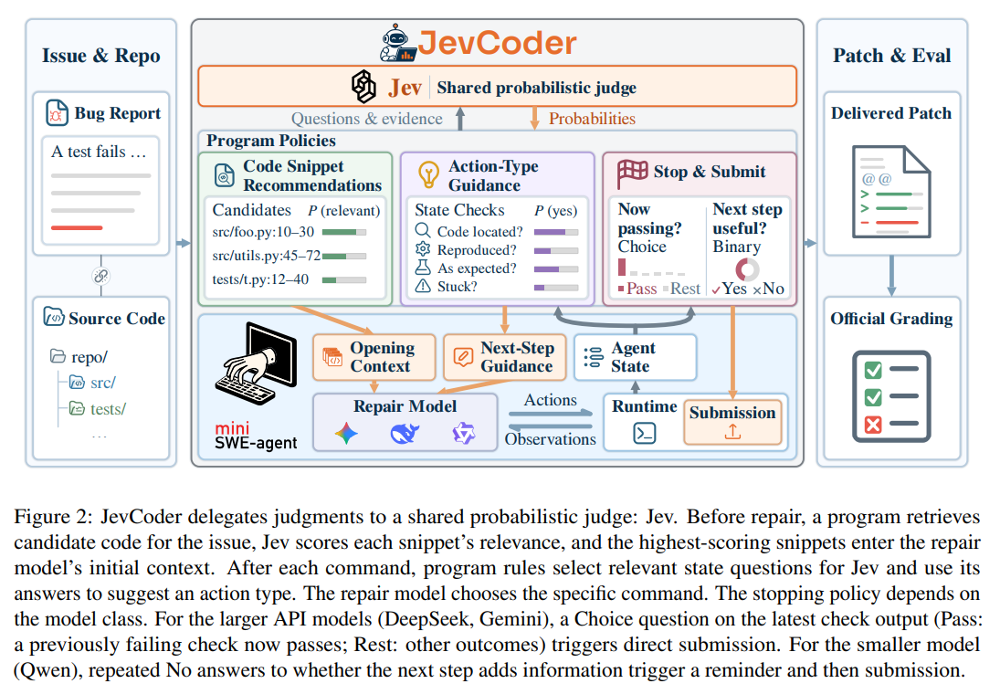
- 前置阶段：代码片段相关性打分（Snippet Recommendation）
问题：仓库里几百上千个文件，哪些代码片段和当前 bug 相关？
作用：提前过滤无关代码，只把高分片段塞进主模型上下文。
结论：收益很稳 —— 它能缩短定位阶段，让模型在第一次修改之前就聚焦到正确区域，减少大量漫无目的的检索和阅读。
- 迭代中间：动作类型引导（Action-type Guidance）
问题：跑完一轮测试失败之后，下一步应该做哪一类动作？继续读代码？新增修改？回退？跑更多测试？
作用：给主模型一个动作方向提示，而不是让模型每次从零思考策略。
结论：Jev 对修复状态（当前走到哪一步、有没有进展）的区分能力很强；但对 “这个补丁最终能不能修好” 的预判能力偏弱。它擅长判断 “现在处于什么状态”，不擅长预判未来结果。
- 终止判断：是否可以提交补丁、停止循环（Stopping）
问题：现在测试通过了吗？要不要停止，还是继续微调？
结论：终止策略不能一刀切，要适配主模型本身能力：
大 API 模型（DeepSeek、Gemini）：看到测试成功就停；
开源中等模型（Qwen3.8-27B）：不要单看一次成功，改成连续多轮没有进展时停止，避免假阳性提交；
最终给出的判断是：
判断外包的收益不等于小模型本身便宜，收益来自这个判断改变了后续修复轨迹，减少了昂贵主模型后续要做的工作量；
优先外包那些能压缩上下文、能阻止无效迭代、能引导 Agent 少走弯路的判断 —— 单纯做结果校验、不改变后续动作的判断，外包价值有限；
具体实验上。论文设计了四层递进的实验体系，在SWE-bench真实的仓库上进行：
- 判决质量隔离实验（先单独测 Jev 本身能不能把各类判断做好）
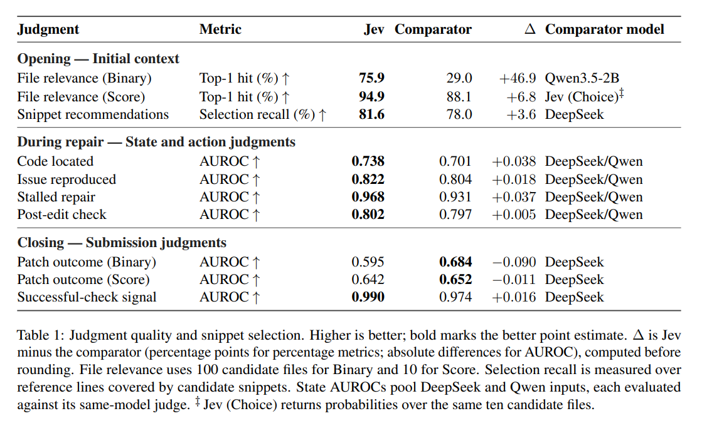
把修复流程拆成三个独立的判断任务，单独拿出来，给 Jev 输入固定证据（bug 描述、候选代码、修复轨迹、测试日志），单独评测 Jev 在三类判断上的独立准确率，不接入 Agent 闭环，不影响后续动作。
三类判断：
A. 片段相关性打分（Snippet Recommendation）：候选代码片段和当前 bug 是否相关，排序
B. 动作类型引导（Action-type Guidance）：失败后下一步应该走哪一类动作（读代码 / 修改 / 跑测试 / 回退）
C. 终止判断（Stopping）：当前是否满足提交补丁、停止迭代的条件
结论：
Jev 在状态分类、相关性排序上有不错的区分能力；但是直接预判 “补丁最终是否正确” 的能力偏弱。它擅长识别 “现在走到哪个修复阶段、有没有进展”，不擅长预判未来修改能否成功。
一个关键前置观察：单独看准确率，不足以判断这个判断任务外包有没有价值。有些任务 Jev 准确率很高，但就算交给它判，也几乎不会改变 Agent 后续要做的工作，外包没有净收益。
- 单干预因果实验（单独打开某一类外包判断，看它会不会改变后续修复轨迹，验证核心命题）
对同一个主模型、同一批 bug，跑 4 组对照：
对照组：完全无引导（Unguided），所有决策由主模型自己做
实验组 A：只开【片段相关性打分】，其余决策还是主模型自己来
实验组 B：只开【动作类型引导】，其余决策还是主模型自己来
实验组 C：只开【终止判断】，其余决策还是主模型自己来
结论：
片段相关性打分（A）：收益稳定、幅度最大
提前过滤无关代码，压缩初始上下文，减少漫无目的文件检索；
显著降低主模型 token，同时提升修复率；是三者里收益最稳的模块；
动作类型引导（B）：收益中等，有边界
Jev 给主模型一个动作方向提示，避免模型每次从零思考策略；
但局限：它只能给大类方向，不能告诉模型 “具体改哪一行”；如果 bug 本身定位已经很清晰，这个引导的收益会变很小。
终止判断（C）：收益高度依赖主模型能力，不能一刀切
强 API 模型（DeepSeek/Gemini）：适合 “测试通过就停”，防止继续画蛇添足改坏补丁；
开源中等模型（Qwen3.8-27B）：单次测试成功有大量假阳性，不能看到测试通过就停，改用连续多轮无进展停止策略； 如果终止策略配错，反而会提前提交错误补丁、拉低修复率。
综合结论：三类干预的价值不是由 Jev 判得准不准决定，而是由干预能不能砍掉后续无效搜索、无效迭代决定。
- 全流水线主对比实验（JevCoder 完整系统 vs 两类基线，端到端指标）
把上面三个有正向收益的干预组合成完整闭环 JevCoder，和无引导基线（Unguided）在完全相同 400 任务上做头对头对比；3 个主模型分别独立跑。
结果：
DeepSeek：token 下降 50.6%，修复率上升
Gemini：token 下降 21.6%，修复率上升
Qwen：token 下降 33.6%，修复率上升
结论：
把三类高价值判断打包交给廉价概率裁判，整套 Agent 闭环是有效的；
这套分工方案对商用 API、开源本地模型都通用，不是只对某一类模型有效；
收益来源不是 “Jev 帮模型直接想出正确补丁”，而是压缩上下文、减少无效检索、减少无效试错循环、及时刹车，让主模型的算力 /token 集中在生成补丁这个核心任务上。
- 组件消融 + 同模型自校验对照实验（分离收益来源、区分 “小模型裁判” 和 “大模型自己判”）
关于组件消融：在完整 JevCoder 上，每次拿掉一个组件，其余保留，看指标退化：去掉片段推荐、去掉动作引导、去掉自适应终止判断；
结果：去掉任意一个组件，修复率下降、主模型 token 消耗上升、中位数运行时间变长；拿掉片段推荐的 token 涨幅最大（每任务 + 0.174M token）。
结果：三个组件是互补的，不是单一模块独揽收益；三者组合才是最优。
片段推荐：前置降开销（最大贡献）
动作引导：迭代过程减少迷路
自适应终止：防止无限循环、防止假阳性提交
关于自我判断：不使用 Jev；把完全一样的三类判断问题，交给同一个主修复大模型自己回答（也就是主流 Self-reflection / Self-verification 方案），对比 JevCoder
观测结果：
自校验也能减少一部分主模型的修复轮次、工具调用；但是新增的裁判请求本身也是昂贵主模型 token；
DeepSeek 的自校验方案中位数耗时反而上涨 58.2%；JevCoder 是同时降 token、降耗时；
Qwen 自校验有一定提速，但幅度远小于 JevCoder；
结论：
传统 “大模型自己反思、自己校验” 的方案有硬成本：校验本身消耗昂贵主模型资源；
JevCoder 的优势不只是 “加一个校验环节”，而是用低成本概率裁判承接路由类判断，并且整套策略是基于 “轨迹干预” 设计，而不是单纯校验补丁对错；
Selective Reasoning：推理深度早停（arXiv:2610.19644）
该技术与置信度级联形成互补：级联解决“交给谁做”的路由问题，早停解决“做到什么深度”的资源问题 —— 具体会通过在小模型上训练极轻量的线性头，用收益门、状态触发、熵规则三门控实现按需可中断推理；
论文实测证实熵早停可在准确率下降 < 2 个百分点的前提下节省 34.09% 的推理时间，与固定深度方案相比实现了更优的成本 - 质量平衡 —— 二者共同构成了“按需分配计算资源”的完整框架；
四个新增单元加上9月份的原有评测，使置信度级联模式的证据覆盖了内容审核、智能体、代码、安全、推理控制等多个领域，是当前 Jev 式模型最成熟、证据最充分的生产形态。
8.2.3、反例与边界：错误互补前提不成立时
独立的第三方评测（arXiv:2609.29769）通过 9 个评测面板在 5003 对样本评测上，给出了级联失效的干净反例，具体分析来讲其本质是“错误互补”前提被破坏所导致的：
Jev 最自信的错误里，96.0% 的大模型评审也重复了相同的错误答案（242/252），远高于独立错误的理论期望值 50.3%；
即使使用最优阈值，级联相对最佳单模型的提升不超过 + 2.7 分；交叉验证阈值下，9 个面板中有 6 个的级联效果反而不如最佳单模型；
这一现象与 后续总结的失败模式所揭示的“大模型共性偏差”一脉相承：当两级模型基于相似的训练数据、相似的架构范式时，会共享大量认知偏差，对同一问题产生相同的错误判断，导致第二级无法起到纠错作用。这也提示选型者：级联的两级模型差异越大，纠错收益越高；若两级是同系列模型的大小版本，级联效果会大幅打折。
agent 安全评测（arXiv:2609.33401）则从另一侧验证了同一结论：在注入攻击场景下，多数复核Judge都会复现 Jev 的高置信漏检，仅靠模型级联无法解决安全类的极端偏差问题，必须引入确定性规则与人工复核作为最终兜底。
WAInjectBench 上 Jev 高置信漏检（max(p,1−p)≥0.95）130 个 FN，7 个复核 judge 每个最多只纠正 5/130，每个 judge 都复现 >80% 的高置信错误；
AgentHarm 上 Kimi 虽纠正 Jev 全部 14 个漏检，却复现全部 42 个误报并新增 54 个；
延伸结论：复核 judge 的纠错收益不能从聚合 accuracy 推断，必须实测错误重叠。
8.2.4、其他级联形态与 Jack & Jill 客户案例
除标准的双模型级联外，落地实践中还演化出了多种适配不同场景的级联变体：
| 形态 | 结构 | 关键数字 | 来源 |
|---|---|---|---|
| 渗透决策级联 | L0 确定性 validator（零成本）→ L1 System One Noul → L2 Choice+Score → L3 LLM deliberation → L4 人工复核 | 加法原则； 最坏等价于关闭 System One 层；单 轮实测墙钟 −16.5% |
arXiv:2609.28940 |
| agent 安全选择性自动化 | 双阈值（allow τ_L /block τ_H 独立搜索），1%/5%/10% miss 预算 | 1% miss 预算下 WAInjectBench Jev coverage
0.00%（全升级 review）； R-Judge Jev 仅 7.63% coverage； 独立阈值后 R-Judge 47.03% 但 allow 仅 1 条 —— 最严预算下靠多 block 提 coverage、allow 几乎不动 |
arXiv:2609.33401 |
| CPU–NPU 异构级联（COGNIT-Guard） | CPU 浅分类器（TF-IDF+XGBoost）快门控出 p_fast；c≥θ*=0.70 落 CPU，否则升级 NPU 常驻 Laya-322M | 94.62% 请求落 CPU / 5.38% 升级 NPU； live 级联均值 41.63 ms（P95 76.25）、99.23% acc、0/48 benign 误报； 纯 NPU Laya 21.77 ms |
arXiv:2609.33671 |
| Code/Simulation 分工 | 代码（游戏副本 lookahead / 物理仿真）提供后果 z，Jev 只做 evaluation | ALFWorld 单局 Jev 单独 42/134（31%）→ +lookahead v1 79 →
+v2（加新解锁命令）116/134（87%）； Robot Stacker raw torques 0/20 → 代码技能间选 9/20 native、22/40 新指令局 |
arXiv:2610.01834 |
【注意】其中 COGNIT-Guard 是少数将校准、延迟 SLO 与假阳性惩罚纳入同一优化问题的案例：阈值仅在验证集上选取，带非对称假阳性惩罚与延迟约束，其在干净未见样本上级联准确率 98.85%、良性样本假阳性率 0.42%、ECE 1.12% —— 但其OOD能力依然十分弱，远未达到“通用安全护栏”的水平。
Jack & Jill：首个完整真实业务客户案例
此前所有证据均来自科研与开源场景，没有真实生产客户的端到端业务数字。2026-10 官方公布的 Jack & Jill 招聘平台案例补上了这一缺口
招聘平台用 Jev 做候选人初筛，每千候选人成本从 $0.755 降至 $0.092（−88%），中位筛选时长从 20.3s 缩短至 10.3s，筛选 AUC 从 0.924 升至 0.933，整体上线周期 10 天；
该案例的核心价值不在于“−88%”这个数字本身（单客户、官方自报），而在于它第一次在真实业务负载上同一测量条件下验证了本报告的核心判断：收益几乎全部来自成本与时延，质量基本持平 —— 这与执行摘要判断二“成本延迟优势坚实、精度优势不成立于接口”完全一致；
它同时验证了落地场景的最优特征：招聘初筛这类“候选集明确、评价标准清晰、对错可离线验证”的任务，正是 Jev 式决策层最适配的落点；10 天的上线周期也说明，基于影子评估的灰度接入模式，集成成本与风险均处于可控范围。
8.3、生产模式二：影子评估
影子评估是决策模型上线前的标准灰度流程，是应对模型域偏移、校准漂移、场景适配性未知的核心风险控制手段。其完整协议规范（取样方法、并行运行规则、分源报告要求、对抗性小测）见前述内容，对抗性验证方法见将在后续展开，本节仅提炼生产环境中的落地实践要点。
标准落地步骤
综合 hermes-jev-skills 与 codex-router 的运维实践，标准影子评估流程分为四步，每一步都对应风险控制的一个环节：
- 只决策、不执行，旁路全量日志
- 影子模式下 Jev 正常输出结构化决策，但执行端完全忽略结果，所有决策日志仅写入本地存储并做哈希脱敏；
核心是确保业务链路零风险，避免模型异常对真实业务造成影响。
- 真实流量回放与人工抽样核对
- 开源社区的实践经验明确指出“安静的日志证明不了任何事”—— 必须基于真实业务流量回放，人工抽样核对决策质量，确认模型在本地负载上的表现符合预期，而非仅依赖官方评测指标；
hermes 项目专门提供了标准化的 PASS/FAIL 调参报告模板，确保评估可复现。
- 可复现的成本收益测算脚本
- 成本收益测算必须基于真实观测数据，采用公开统一的费率标准，同时明确标注反事实估算的局限性 —— 未经过 AB 实验验证的质量与成本数字，仅作参考不作承诺；
codex-router 的
report_routing.py工具可生成第三方可复现的节省报告，并明确标注反事实估算的边界。
- 切流后保留兜底降级机制
- 全量上线后必须保留一键绕开开关与故障降级策略，模型异常时自动回退到原有链路，确保业务连续性；
两个开源仓库的诚实样本
开源社区的两个典型案例，体现了可靠落地的自证边界意识：
codex-router 的−60% 成本节省声明。作者在 BACKTEST.md 中如实做了三重限定：
①这不是实测的配额节省；②不是当前策略的证据；③是 237 轮对话、旧策略下的历史仿真；
引用时绝不能简化为“省 60% 配额”的已证事实。
daf-jev 的置信门与批量化优化。
其报告 ECE 0.0730、Brier 0.0252，同时明确声明：正确标签采用“重复选择众数”的自一致性代理，并非真实准确率 —— 对照上述的校准基准，该水平属于中等校准；
批量化处理方面，
一次 N 问批量调用比 N 次单问快 4.0×–18.6×，token 节省 2.8×–4.2×，是降低影子评估旁路成本的关键技巧；
【注意】影子评估的主要成本是“双跑开销”—— 真实链路照常运行原有模型，同时让 Jev 旁路输出决策；批量化合并调用的优化思路，同样适用于正式上线后的生产链路，可进一步摊薄边际成本。
8.4、成本模型：成本结构与选型视角
本节从结构层面分析两种生产模式的成本构成，分析成本背后的核心驱动因素。实测数字（各部署形态 p50 延迟、吞吐、单次成本）横向上不具有比较意义，不做讨论。
8.4.1、级联成本结构
级联的期望成本公式为：
期望成本 = (1-升级率) × 第一级成本 + 升级率 × 第二级成本 + 固定旁路成本
其中升级率是成本的第一驱动因素/一阶变量，它由三方面共同决定：第一级模型的能力、任务本身的难度分布、设定的质量要求；
能力越强、任务越简单、质量要求越低，升级率越低，成本节省越明显；
JEV-as-a-Judge 论文的两组数据清晰展示了负载难度的影响：
留存测试集升级率 31.5%，对应费用比 0.414；全新负载升级率 74.2%，对应费用比 0.755。
即新负载（live）比旧负载（held-out 同 benchmark 族）升级率高 42.7pp，费用比几乎翻倍。
- 因此选型时不能直接套用公开场景的节省比例，必须基于自身业务的难度分布做影子测试估算。
8.4.2、API vs 自托管的权衡
两种部署模式的核心差异不在成本数字，而在成本结构、数据安全与运维责任的分配，对应选型决策树中的“成本约束”与“数据主权”两个分叉：
托管 API 模式：固定成本为零，按调用量付费，无需承担模型运维、版本迭代、硬件采购的成本，上线速度快；但数据需要出域，延迟包含网络往返，且长期来看边际成本固定，规模效应有限。适合数据敏感度低、调用量波动大、希望快速上线验证的场景。
自托管模式：边际成本极低（仅电费与硬件折旧），规模越大成本优势越明显，数据全程不出域，延迟可控；但需要承担权重获取、校准迁移、版本迭代、硬件运维的固定成本，且存在量化保真、校准漂移等技术风险（详见 §6.4 与 §7.4）。适合数据敏感度高、调用量稳定、有技术运维能力的场景。
需要特别注意的是，自托管不仅是成本与延迟问题，更是安全问题。
根据后续章节“state 即攻击面”的结论，将业务状态数据发送给第三方 API，本质是扩大了系统的攻击面；
自托管模式下数据闭环在内部，可显著降低数据泄露与注入攻击的风险；
8.5、选型决策树
选型决策树基于本章所有落地案例的共性规律提炼，核心逻辑是“先匹配能力边界，再匹配约束条件”，避免为了省钱而把模型放在不适合的位置。如下为基于“延迟 / 成本预算 × 校准需求”的部署选型矩阵（每个维度给出代表性方案）：
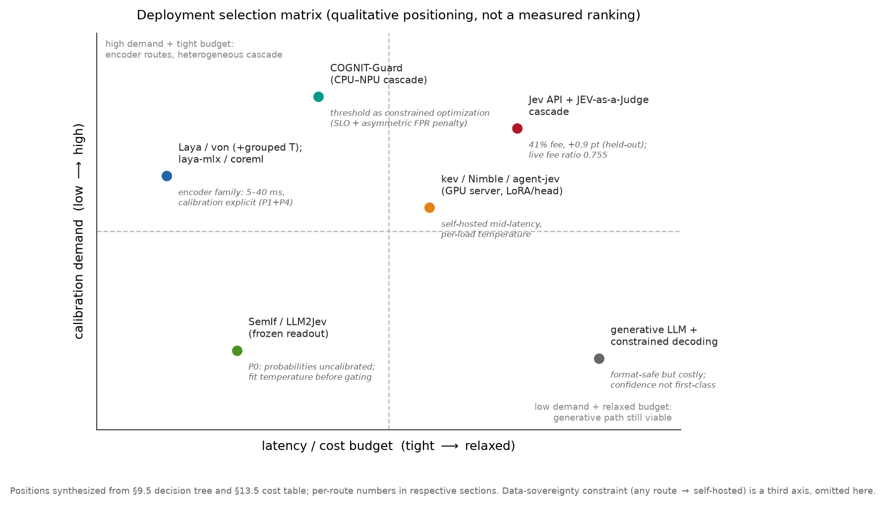
完整的决策路径如下所示：
文本描述
新接入一个决策点 ├─ 分叉 0：这个决策的正确答案能否从输入描述直接判断？ │ ├─ 否（需要 lookahead/世界模型/对手建模/simulation） │ │ → 不要让 Jev 承担独立决策；代码/仿真器提供后果 z，Jev 只做 evaluation │ │ （arXiv:2610.01834：ALFWorld 31%→87%） │ └─ 是（evaluation 型）→ 进入下面三叉 │ ├─ 分叉 1A：校准需求强（概率直接驱动动作/级联/风险路由）？ │ ├─ 强 → 必须用经过校准训练/后处理的模型，并在自己负载上拟合温度 │ │ 代表：COGNIT-Guard（验证集选阈值+非对称 FPR 惩罚，ECE 1.12%） │ │ JEV-as-a-Judge recipe（~100 本地标注 lower-bound 选阈） │ │ 反诈 JevLite（CE+Brier + 验证集温度，ECE 5.2%） │ └─ 弱（只要 argmax、概率仅作展示）→ 零训练读出即可 │ 代表：SemIf/AnyJev 直接读 option-letter logits（见 §5/§7） │ ├─ 分叉 1B：成本约束主导（调用量大、延迟预算紧）？ │ ├─ 紧（<50 ms、高 QPS）→ 自托管小型编码器 │ │ 代表：laya-mlx 7.39 ms（322M）/ laya-coreml ANE 4.98 ms │ │ Chinese-Jev 14–15 ms / von 0.096 s（4 vCPU OpenVINO） │ ├─ 中 → 托管 API + 级联省费 │ │ 代表：JEV-as-a-Judge held-out 费用比 0.414 │ └─ 松 → 直接托管 API，不折腾自托管 │ └─ 分叉 1C：数据主权约束（数据不能出域/不能上云）？ ├─ 强 → 纯本地推理，零云 API │ 代表：laya-mlx / laya-coreml（零 PyTorch、零云） │ open-spark-jev（vLLM 本地 API） │ hermes-jev-skills 的数据外发逐项披露（脱敏到 2,500 字符、疑似 credential 不发） └─ 弱 → 托管 API 最简
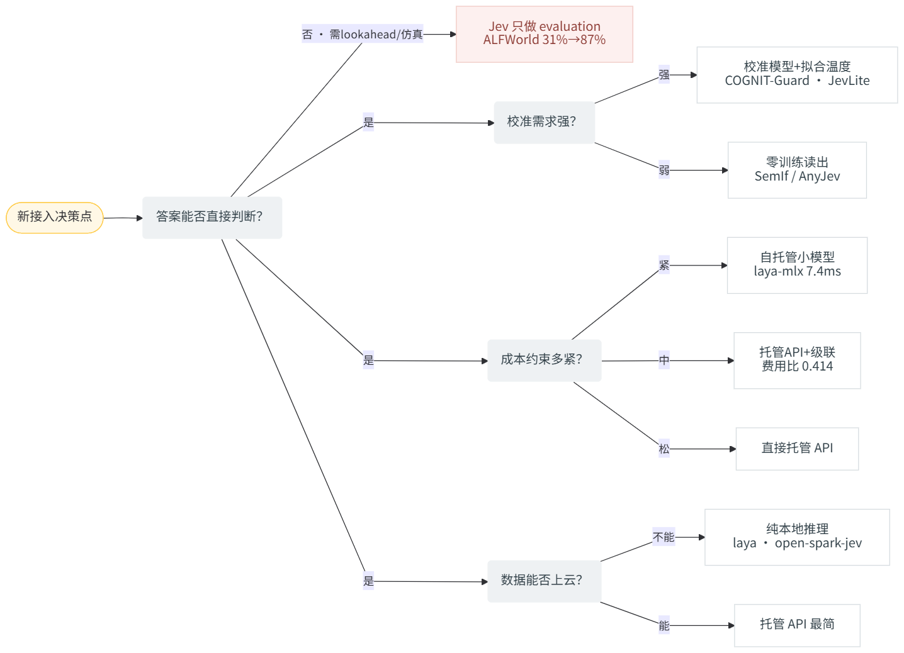
这里必须强调的是，无论选择哪种路线，结合 2609.32160 审计清单与各仓库实践来看，所有场景均需遵守五条通用纪律，每条对应一类已知失效模式：
- 上线前必跑选项名 / 顺序探针
验证模型是否存在选项名效应、顺序偏差（对应框架效应失效模式），避免表面正确实际由选项格式主导决策；
- 阈值与评测集分离冻结
阈值必须在独立验证集上拟合，冻结后不得在测试集或生产数据上调参，避免过拟合与数据泄露，符合统计纪律。
- 先影子评估后全量切流
所有场景必须经过真实流量的影子验证，不得直接全量上线，控制域偏移风险。
- 硬规则本地执行，模型只做软决策
高风险动作、白名单、黑名单等确定性规则放在本地代码层，模型仅在规则边界内做软性决策，对应注入攻击风险。
- 按决策位置匹配基线与升级路径
决策模型在系统中扮演的角色（步骤替换 / 控制器 / 筛选器 / 测量工具）不同，对应的基线标准与低置信升级去向也不同，不可混用同一套升级策略。
8.6、落地原则共识：从九个系统反推的五条共识
综合九个公开落地系统的架构设计，可以发现业界不约而同地采用了相似的安全策略。这些策略本质上都是对模型固有缺陷的架构化应对（下一章节将进行展开），这里可提炼为五条可迁移的落地共识：
决策层是“加法”不是“替换”：
所有系统均未用决策模型替换原有链路，而是将其作为额外的增强层叠加在现有流程上；模型可以提升效率、降低成本，但不能覆盖原有确定性规则的拒绝结果，最坏情况下等价于模型未接入。
这一设计直接对冲了“上下文可翻转、输出不稳定”的失效风险。
高风险动作路径不经过概率模型：
资金划转、漏洞利用、强制挂断、止损出场等高风险动作，均不经过 AI 决策层，由确定性规则或人工直接控制；
AI 仅参与低风险的初筛、建议、分诊环节，从架构上杜绝了模型错误导致重大损失的可能，对应“注入攻击、幻觉输出”的失效风险。
双跑 / 影子是默认灰度，不是可选项：
没有任何一个公开系统采用直接全量切流的上线方式，均先经过影子评估阶段，用真实流量验证模型表现。
这是应对“域偏移、校准漂移”的标准操作，也是成本收益测算可信的前提。
置信度阈值在本地负载上冻结，不照搬官方指标：
所有落地效果较好的系统，均在自身本地数据上重新拟合了置信度阈值与校准参数，未直接使用官方公布的通用阈值；
这一做法对应跨域校准失效结论 —— 官方校准仅在训练分布上有效，迁移到新场景必须重新适配。
数据外发逐项披露与最小化脱敏：
对于使用第三方 API 的系统，均对发送给模型的数据做了严格的脱敏与截断处理，明确列出数据外发清单，敏感凭证、核心业务数据禁止外发；
这一做法对应“state 即攻击面”的结论 —— 发送给模型的每一条数据都可能成为攻击入口，必须遵循数据最小化原则；
这五条共识与模型的失败模式一一对应：正因为决策模型存在上下文可翻转、选项名可主导、注入可劫持等固有缺陷，落地时才需要用架构将其限制在“软建议、可旁路、双跑验证、本地阈值、数据最小化”的边界内。理解这些边界，而非夸大模型能力，是落地成功的核心前提。
8.7、小结
Jev 式决策模型发布三周内的落地实践，清晰勾勒出了其当前的有效边界：它不是能替代大模型的“更强模型”，而是适配大模型生态的“效率组件”—— 擅长做初筛、路由、分诊、评估类的选择型任务，核心价值是降本提效，而非提升精度。
置信度级联是当前证据最充分、落地最成熟的生产模式，但其生效有严格的前提，脱离前提盲目套用会导致质量下降或成本不及预期。影子评估是标准的上线流程，是控制风险、验证收益的必经环节。下一章将系统梳理决策模型的各类失效模式与能力边界，为风险防控提供更完整的依据。